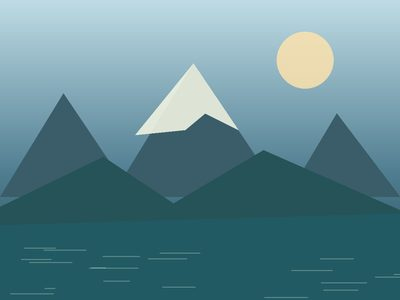

2 photos
10:05 – 16:22
36.9 km
The first boat of the morning took us across the lake to Vitznau, where the little red cog railway climbs all the way to Rigi Kulm.
At the top the clouds lifted just long enough to show the snow on the Alps. We walked down past Rigi Staffel to Kaltbad, then followed the Felsenweg along the cliffs to Rigi First.
A cable car brought us down to Weggis for one last look at the water, and the evening boat carried us home to Lucerne.
Photos

10:05 Snow on the peaks, seen from the top of the Rigi ★ HIDDEN 16:22
Evening calm by the water at Weggis
★
HIDDEN
16:22
Evening calm by the water at Weggis
★
HIDDEN
← → keys or swipe change day · Esc returns to the trip